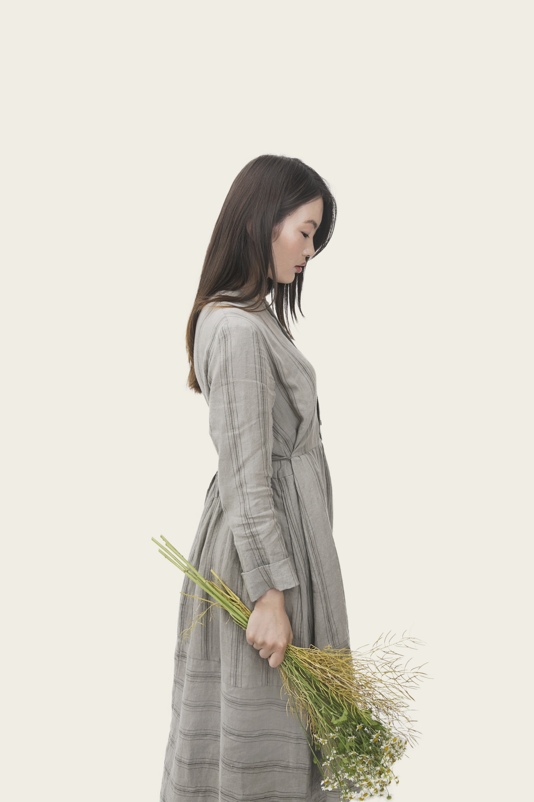

2 comments
-

Emily Wang
Hi Teacher, the attached file is my homework of chapter 2. And here comes a
HW-2-David.zip
question: Why in the following code the height of the div is bigger than the
height of the img ? There is a gap below the image, but it doesn’t seems to be
a padding/margin.
What is the gap or extra space below image? -

Hi David, by default, an image is rendered inline, like a letter so it sits on the
same line that a, b, c and d sit on. There is space below that line for the
descenders you find on letters like g, j, p and q.
You can: • adjust the vertical-align of the image to position it elsewhere
(e.g. middlele ) or
• change the display so it isn’t inline.